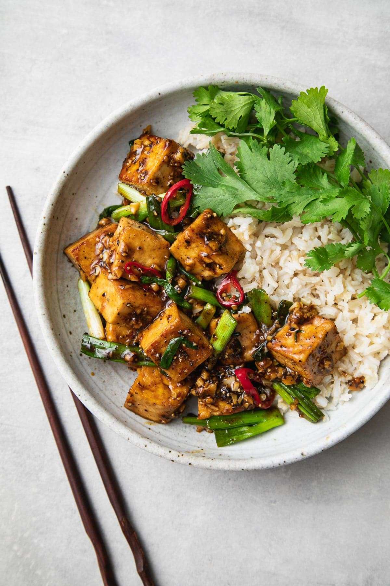

Black Pepper Tofu

Description
This recipe was originally found here.
Ingredients
- 1 block (14 - 16 oz.) organic tofu (super firm, extra firm or firm), cubed
- 1 tablespoon toasted sesame oil
- 1/4 cup tamari, soy sauce or coconut amino's
- 1/4 cup water or veggie broth
- 3 tablespoons pure maple syrup
- 2 teaspoons cornstarch
- 1 tablespoon fresh cracked pepper
- 3 - 4 cloves garlic, minced or 1 teaspoon garlic powder
- 1 1/2 inch knob ginger, minced
- 1 bunch scallions, cut into 1 inch pieces
- 1 - 2 chili's peppers, sliced and seeds removed or 1 teaspoon red pepper flakes
- 1 bunch cilantro, roughly chopped, to serve
Instructions
- Prep tofu: If not using one of the tofu's mentioned above, you'll want to drain and press your tofu to remove excess water. Simply cut tofu into slabs and place between paper towels or a clean dish cloth. With wrapped tofu laying on a flat surface, place a heavy book/object on top for about 15 minutes or so.
- Stir-fry sauce: In a small bowl, combine the tamari, water, sweetener and flour. This will be your slurry, ensuring your tofu will be coated nicely.
- Cook tofu: Heat oil in a large wok or skillet over medium high. Add tofu and cook, stirring occasionally for about 10 minutes, or until golden on all sides. It doesn't have to be perfect.
- Add remaining ingredients: Add in your slurry mixture, ground pepper, garlic and ginger. It will sizzle at first when adding the liquids. Stir fry another 3 minutes or so, add in hot peppers and scallions. Liquids should start to thicken a bit, cook another 5 minutes or until the scallions are just softened.
- Serve: Pair with brown rice, brown rice/quinoa mix, basmati or jasmine rice. Soba noodles would be great too. Add a large handful of chopped cilantro on the side, it will add to the flavors while giving a nice dose of freshness to the pepperiness. If you love cilantro, you will truly appreciate it here!